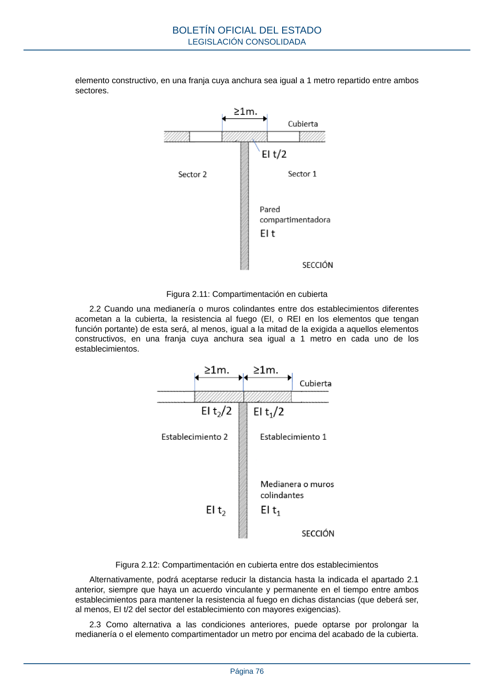

RSCIEI · edición 2025-04-10 · capa asociada
Documento RSCIEI-asociada · SHA-256 del PDF 85aa0af25d51e5b58d8975a4eefbf76d3f57a8933445cfe814ae9c4818a2e3e7
Página física 76 de 108.
Copia fiel del PDF fuente · Fuente oficial
Ficha de la disposición en la fuente oficial
Texto extraído y reorganizado: Basado en datos de la Agencia Estatal Boletín Oficial del Estado. PDF reproducido: Fuente de los datos: Agencia Estatal Boletín Oficial del Estado.
Formato: Texto de la página (Markdown)
elemento constructivo, en una franja cuya anchura sea igual a 1 metro repartido entre ambos sectores. Figura 2.11: Compartimentación en cubierta 2.2 Cuando una medianería o muros colindantes entre dos establecimientos diferentes acometan a la cubierta, la resistencia al fuego (EI, o REI en los elementos que tengan función portante) de esta será, al menos, igual a la mitad de la exigida a aquellos elementos constructivos, en una franja cuya anchura sea igual a 1 metro en cada uno de los establecimientos. Figura 2.12: Compartimentación en cubierta entre dos establecimientos Alternativamente, podrá aceptarse reducir la distancia hasta la indicada el apartado 2.1 anterior, siempre que haya un acuerdo vinculante y permanente en el tiempo entre ambos establecimientos para mantener la resistencia al fuego en dichas distancias (que deberá ser, al menos, EI t/2 del sector del establecimiento con mayores exigencias). 2.3 Como alternativa a las condiciones anteriores, puede optarse por prolongar la medianería o el elemento compartimentador un metro por encima del acabado de la cubierta. BOLETÍN OFICIAL DEL ESTADO LEGISLACIÓN CONSOLIDADA Página 76
